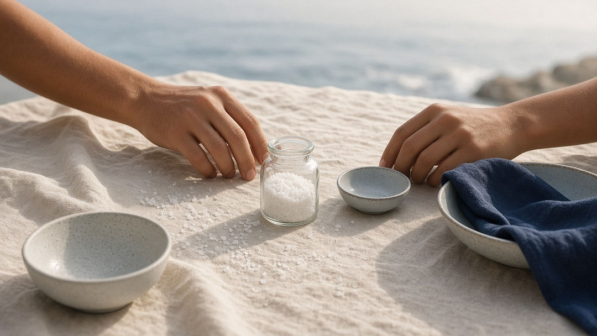

Sal de mar de México
¿Y si miras
de nuevo?
Sal de mar de México en frasco numerado. El lote fundador es de solo 100 frascos. Apúntate y te avisamos primero.
Apuntarte es gratis y tú decides el siguiente paso.
La pregunta
Empezó con una pregunta en la mesa.
Una niña prueba la comida de su mamá. «Está un poquito desabrida. ¿Me pasas la sal, por favor?»
Su mamá no se la pone en la mano. La deja sobre la mesa.
—¿Por qué?
—Porque pasar la sal directamente en la mano trae mala suerte.
—¿Pero por qué?
—Porque así me enseñaron.
La niña lo pensó un momento. «Tú cocinas con amor, y a mí me encanta tu comida. Si te doy la sal en la mano… ¿nos hacemos daño?»
La mamá guardó silencio. Luego sonrió.
—Creo que es una creencia que tenemos. Quizá nunca nos detuvimos a preguntarnos si de verdad es cierta.
—¿Podemos hacerlo diferente?
—Cada vez que nos pasemos la sal, nos vamos a mirar a los ojos y lo vamos a hacer con amor.

El descubrimiento
Muchas cosas las recibimos y las seguimos pasando sin elegirlas.
La mamá de la historia no hacía nada malo. Hacía lo que le enseñaron, como casi todos. Y lo que se recibe así no es solo la sal:
- una costumbre de mesa,
- un miedo,
- una forma de querer,
- una manera de reaccionar,
- una historia que ya nadie recuerda quién empezó.
Darte cuenta no es un reproche para quien te lo dio. Es el primer momento en el que se puede elegir.

Por qué sal
Porque está en toda mesa.
La sal no necesita presentación. Está en la cocina de cualquiera, en la comida del domingo y en la de un martes cualquiera. La vemos todos los días, tanto que dejamos de verla.
Es algo natural y vivo, y de algo parecido estamos hechos: llevamos sal en la sangre, en el sudor y en las lágrimas. La sal de mar suele conservar parte de los minerales y oligoelementos del agua de la que viene. No te prometemos efectos en la salud; solo que está ahí.
Del mar de México a tu mesa. De tu mesa, a alguien más.
Por eso sal: es de las pocas cosas que se pasan de mano en mano todos los días.

El gesto
Cuando pasas la sal, no pasas solamente sal.
Pasas costumbres. Miedos. Formas de querer. Historias que ni recuerdas quién comenzó.
¿Qué estás pasando?
No es «qué te pasa». Es qué le pasas a quien tienes al lado. La sal no cambia a nadie; solo nos recuerda que podemos elegir.
Quién está detrás
Lo que empecé a ver cuando me hice papá
Cuando nacieron mis hijos, empecé a preguntarme no solamente qué les estaba dando, sino qué les estaba pasando.
No me refiero solamente a lo que les doy. Me refiero a lo que ven. A lo que escuchan. A la manera en que reacciono. A mis miedos. A mis creencias. A mis costumbres. A las cosas que hago automáticamente sin detenerme a preguntar de dónde vienen.
Porque entendí algo que cambió profundamente mi manera de vivir: muchas de las cosas que transmitimos no las elegimos. Simplemente las recibimos. Y las seguimos pasando.
Quince años mirándome
Hace más de 15 años comencé un camino personal de autoconocimiento. No empezó con una marca. No empezó con la sal. Empezó conmigo. Con aprender a observarme, a reconocer mis patrones, a preguntarme por qué pienso lo que pienso y qué hay detrás de las cosas que doy por ciertas.
El verdadero trabajo no consiste en encontrar respuestas para decirle a los demás cómo vivir; consiste primero en aprender a mirarte a ti mismo. Y cuando tienes hijos, esa mirada adquiere otra dimensión: ya no solo trabajas en ti, ves qué parte de ti estás dejando en ellos.
El momento
PÁSALA nació en una mesa, con uno de mis hijos. La historia que cuento arriba está basada en algo que realmente ocurrió, aunque he cambiado a los personajes.
No quise decirle que la creencia era absurda, sino enseñarle algo más importante: podemos detenernos, mirar aquello que hacemos, preguntarnos de dónde viene, y después elegir. Podíamos simplemente poner la sal sobre la mesa, como siempre. O podíamos mirarnos, pasarla y hacerlo desde el amor.
Ese gesto se volvió para mí una metáfora: pasamos palabras, miedos, costumbres, formas de amar, maneras de reaccionar, creencias, historias que ni recordamos quién comenzó. ¿Esto que estoy pasando realmente lo quiero seguir pasando?
Por qué existe PÁSALA
No nació porque yo quisiera una marca de sal, sino porque encontré en la sal un lugar sencillo para hacer una pausa. Está en nuestra mesa, en nuestros rituales; precisamente por tan cotidiana puede ser un recordatorio: un segundo para mirar, preguntar y elegir.
No quiero decirte qué pensar. No quiero decirte qué creencia abandonar ni cómo vivir. Quiero invitarte a observar. Porque cuando observas aparece algo que antes no estaba: elegir. Y para mí ahí empieza la libertad.
Lo que quiero pasar
Soy padre, y quizá por eso me importa más lo que transmitimos que lo que acumulamos. Quiero que mis hijos aprendan que pueden preguntarse, mirar de nuevo, cuestionar incluso lo que recibieron de quienes más aman, sin rechazo, sin juicio, con amor. Cuestionar una creencia no significa rechazar a quien te la enseñó; significa tener la libertad de decidir qué conservar y qué transformar.
No quiero enseñarles a mis hijos qué pensar. Quiero enseñarles a detenerse, mirar y elegir.
PÁSALA es mi manera de recordarlo. A mí, a mis hijos y, si algún día conecta contigo, también a ti. No por la sal, sino por el momento que puede abrir.
Soy un hombre en constante aprendizaje. Hoy intento convertir una experiencia que me ayudó a despertar en un pequeño ritual que acompañe a otras personas en su vida cotidiana. No sé hasta dónde puede llegar PÁSALA. Pero sí sé desde dónde nació: de una mesa, de una pregunta, de mis hijos, de una responsabilidad y de una elección.
EL VALOR DE SER FUNDADOR
Fundador, en PÁSALA, significa algo muy concreto: ser de las primeras personas que encontró algo que todavía estaba naciendo y decidió decir:
"Esto resuena conmigo. Quiero estar aquí."
Porque toda idea empieza sola. Y se vuelve real gracias a quienes creen en ella primero.
Los primeros que llegan tienen un valor propio, irrepetible: el de haber estado ahí antes de que existiera certeza.
- Son quienes escuchan la idea cuando todavía no está terminada.
- Quienes pueden verla antes de que exista.
- Quienes hacen preguntas.
- Quienes aportan.
- Quienes señalan lo que funciona y lo que todavía puede crecer.
- Quienes ayudan a convertir una intención en algo real.
Eso es ser fundador en PÁSALA: ayudar a construir la marca mientras todavía está descubriendo quién puede llegar a ser.
LOS PRIMEROS CIEN
PÁSALA nace de una pregunta que empezó en una mesa:
¿Qué estamos pasando?
Una pregunta que primero me hice a mí mismo. Como padre. Como hombre. Como alguien que lleva más de 15 años intentando observarse y vivir con mayor consciencia.
Y ahora quiero descubrir algo más: ¿qué sucede cuando esa pregunta deja de ser solamente mía y empieza a ser compartida por otras personas?
Por eso empiezo con un número pequeño y deliberado: cien personas.
Personas con historias distintas, con formas distintas de ver la vida, unidas por algo en común: la voluntad de detenerse, mirar de nuevo y elegir conscientemente qué quieren seguir pasando.
Ese grupo será parte del primer capítulo. Y para mí, eso tiene un valor mucho mayor que una promoción: es encontrar a las personas con las que vale la pena construir.

¿QUÉ SIGNIFICA REALMENTE ESTAR ENTRE LOS CIEN?
Significa que un día podrás decir:
"Yo estaba ahí cuando PÁSALA todavía estaba empezando."
Cuando la pregunta todavía estaba sobre la mesa.
Y si decides tomar tu lugar, esto es lo que recibirás:
-
01 — UN NÚMERO QUE NO SE REPITE
Uno de los primeros 100 frascos. 001 → 100. Tu número será el de tu lugar en el comienzo — una pequeña forma de recordar: "Yo estuve aquí."
-
02 — UNA CARTA DE ADRIÁN
Una carta personal, con tu nombre y tu número, escrita por el hombre que comenzó esta historia. Porque detrás de PÁSALA hay una experiencia personal, una pregunta y una responsabilidad: ¿qué estamos transmitiendo a quienes vienen después de nosotros?
-
03 — ALGO QUE PUEDES PASAR
Si algún día decides regalar tu frasco a alguien que amas, el significado sigue viajando contigo. Puedes contarle la historia. Puedes decirle por qué existe. Puedes pasarle la sal — y pasarle también la pregunta. PÁSALA nació para pasar.
-
04 — UN CÍRCULO
Los Cien tendrán un espacio propio: para mantener abierta una conversación sobre PÁSALA, sobre lo que estamos creando, sobre las decisiones que vienen — y, de vez en cuando, sobre la pregunta que nos une. Cien personas todavía pueden escucharse. Ese límite es deliberado.
-
05 — SERÁS DE LOS PRIMEROS EN SABER
Cuando llegue algo nuevo —una nueva sal, un nuevo formato, una nueva experiencia— los Cien serán los primeros en enterarse. Porque quien ayudó a abrir la puerta merece estar cerca cuando se abre la siguiente.
-
06 — ESCUCHARÁS LA VOZ DETRÁS DE PÁSALA
Recibirás un mensaje de Adrián contando, con su propia voz, cómo nació PÁSALA: la historia, la pregunta, la responsabilidad de lo que transmitimos, y el momento en que una conversación cotidiana se convirtió en una idea. La voz de la persona que empezó esto, en primera persona.
-
07 — TU MESA PUEDE FORMAR PARTE DEL ORIGEN
Si quieres, podrás compartir una fotografía de tu mesa y una frase: ¿qué quieres seguir pasando? Basta con dejar una pequeña huella, a tu manera. Porque algún día, si PÁSALA crece, quiero poder mirar hacia atrás y encontrar las mesas donde comenzó.
-
08 — UNA VEZ AL AÑO, UNA PREGUNTA
Recibirás algo muy sencillo: una pregunta para llevar a tu mesa. Simple, esperada, con espacio para que realmente importe.
-
09 — UNA FRASE TUYA QUEDA EN EL PRINCIPIO
Al entrar podrás dejar una frase — algo que quieras seguir pasando, o algo que hayas decidido dejar de pasar — con tu nombre de pila y tu número. Parte del registro de quienes estuvieron en el comienzo.
-
10 — TU VOZ AYUDA A CONSTRUIR LO QUE VIENE
Cuando PÁSALA tenga que tomar ciertas decisiones importantes, podremos preguntar a los Cien. Significa que quienes creyeron primero tendrán la oportunidad de ser escuchados primero. Yo pondré los caminos sobre la mesa; ellos podrán decir qué les mueve y qué les representa. Una marca que nace de una conversación sigue escuchando cuando empieza a crecer.
PERO HAY ALGO MÁS IMPORTANTE
Ser uno de los Cien es convertirte en parte de algo que todavía no sabemos hasta dónde puede llegar. Y eso, para mí, es lo verdaderamente valioso.
Hay millones de personas dispuestas a comprar un producto cuando ya es conocido. Son muy pocas las que se acercan cuando todavía hay incertidumbre, cuando todavía hay preguntas, cuando todavía estamos construyendo.
Esas personas son las que hacen posible que una idea se convierta en realidad.
Y si PÁSALA algún día llega mucho más lejos, quiero recordar esto: empezó con unas pocas personas que dijeron "Yo también veo lo que estás viendo."
EL TRATO, CLARO
Hoy simplemente dejas tu correo — así de simple. Cuando los primeros 100 frascos estén listos, te escribimos antes que al público, y ahí decides con calma si quieres tomar tu lugar.
PÁSALA quiere encontrar a las personas a quienes esto realmente les resuena.
Tu lugar es gratuito y tú decides el siguiente paso.
LOS CIEN
Hay personas que llegan cuando la mesa ya está servida. Y hay personas que llegan cuando todavía estamos poniendo los platos.
Los Cien son esas personas — porque fueron los primeros en decir que sí a la pregunta. Y para mí, eso merece ser recordado.
PÁSALA
¿Qué estás pasando?
ERES FUNDADOR PÁSALA POR HABER CREÍDO EN LA PREGUNTA ANTES DE SABER HASTA DÓNDE PODÍA LLEGAR.
Esto empieza con sal.
Hasta dónde llegue, lo vamos a descubrir.
Lo iremos descubriendo juntos, paso a paso, con la misma verdad con la que empezó.
Venimos a invitarte a mirar de nuevo.
PASALAGracias por llegar hasta aquí.
Esto apenas empieza, y ya lo vamos construyendo juntos. Déjame tu nombre y tu correo, y te aviso yo primero.
Gracias por confiar.
Ya estás dentro. Vamos avanzando juntos, y en cuanto haya algo que contarte, te escribo yo.
Adrián